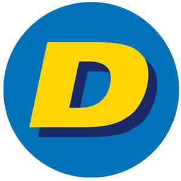

Trade Mark Journal No.2025/017 25 April 2025
UK00004185378 7 April 2025 (35,37,39,42)

- Class 35
- Retailing services connected with the sale of parts and spare parts for vehicles; retailing services connected with the sale of products intended to be incorporated into a vehicle, being tyres, Windscreens, Cabin filters, Air filters, Air conditioners, Parts for the cooling, Shocks, dials, Ball joints, bearings, Suspensions, Steering units for vehicles, brake pads, Records, Braking systems for vehicles, flexible cables, Brake fluids; Business management and organisation consultancy in the automotive field and relating to a garage business; Direct mail advertising in the automotive field and relating to a garage business; Assistance and advice in the context of a franchise contract, namely business management or organisation assistance in the automotive field and relating to a garage business; Franchising (providing business and marketing assistance in the automotive field and relating to a garage business); Advice relating to the management of establishments as franchises in the automotive field and relating to a garage business; Franchisee business management assistance in the automotive field and relating to a garage business; Franchise business management assistance in the automotive field and relating to a garage business; Franchising, namely industrial or commercial management assistance in the automotive field and relating to a garage business.
- Class 37
- Maintenance and repair of motor vehicles, in particular washing, cleaning, emptying, balancing, adjustment, geometry, assembly and fitting of spare parts, tyres and all kinds of fittings for motor vehicles; Installation and repair of air-conditioning equipment; Vehicle repair; Installation of parts for vehicles; Installation of vehicle parts and fittings; Vehicle maintenance and Vehicle parts; Installation of electric and electronic equipment in automobiles; Installation of automobile accessories; Rental of vehicle maintenance equipment; Maintenance of vehicles; Fitting of tyres; Tyre repair; Tire rotating and balancing; Wheel alignment adjustment; Tuning of automobile engines; Arranging for the replacement vehicle windscreens; Repair of vehicles; Overhaul of vehicles; Automotive oil change services; Information in relation to repairing and maintaining vehicles; Garage services for vehicle repair; Inspection of vehicles prior to maintenance; Automobile lubrication; Refilling of vehicle air-conditioning circuits; Replacement of tyres; Vulcanisation of tyres (repair); Vehicle greasing; Vehicle cleaning and washing; painting of vehicles; Vehicle polishing; Refuelling of vehicles ; Maintenance and repair of bodies for vehicles.
- Class 39
- Vehicle rental; towing; car transport; Recovery of vehicles.
- Class 42
- Motor vehicle diagnosis; Technical research relating to motor vehicles; Testing [inspection] of vehicles for roadworthiness; Testing of vehicles; Inspection services for new and used vehicles for persons buying or selling their vehicles; tyre analysis [inspection] services.
DELKO EUROPE
Representative: Venner Shipley LLP